Large Coursework Brief
Name: Ivo
Surname Teruggi
Date 30/05/2021
Table of Contents
Introduction
The Website is a portal where my wife and I can share our most loved recipes.
We have gathered most of these recipes throughout our years together and recorded them in a little recipe book that my wife cherishes very much. When I approached this module assignment to create a website, I thought that it was the perfect occasion to push forward a project we began a few months ago, whereby we create video-recipes, and bring all those recipes from the book to the web, so that we could share them with friends and family.
When designing the website, I wanted to have a simple structure with a navigation Menu at the top and the content underneath it. The website is composed of a home page and 4 pages categorized by meal type (starters, main dishes, baked goods and desserts) and at the bottom of the web page there is a standard footer. For what concern the colour choice, I followed my wife's preferences and used a palette of greys, coral and white colours.
I wanted to make sure that my wife and I could upload new recipes easily, so when designing the website, I created a template engine for the recipes. The recipes are stored in a .js file called recipes.js and are saved as Objects. To add or remove a recipe it is sufficient to modify that .js file. As the webpage loads, it automatically loads all the relevant recipes from the file and the template engine in JavaScript creates a Card for each recipe.
These Recipe Cards are composed of a picture, a title and a description of the recipe. When clicking on the recipe card, it will expand detailing the ingredients and the steps to prepare it. The pictures come either from freestock images websites or have been taken by.
Inspiration
My first source of inspiration comes from my wife, she cooks amazing dishes for the whole family. Cooking is a great passion of hers and you can feel the positive energy in the whole house whilst she is prepares anything in the kitchen.
The guys at SORTEDfood https://sorted.club/ are another source of inspiration for me. My wife and I watch their YouTube videos very often. The Sorted Club website has a simple but fun structured that inspired me when designing my website in a way that was user friendly and entertaining at the same time.
Finally, when researching for this assignment I found a variety of other cooking and recipe websites that guided my creative process. I wanted to familiarise myself with the structure of the most viewed websites offering similar content, to have a better understanding of what users appreciate. Websites such as: https://www.seriouseats.com/, https://www.hotforfoodblog.com/ and https://pinchofyum.com/ have all been of inspiration.
Accessibility
Ensuring accessibility of all users was a priority when designing and developing my website. To do so, I installed a chrome extension called "Screen Reader" (available here https://chrome.google.com/webstore/detail/screen-reader/kgejglhpjiefppelpmljglcjbhoiplfn?hl=en). . This extension reads the content of a website and is designed for blind or partially sighted users.
As I wanted to make sure that bling or partially sighted users’ experience was optimal, I tested how my website performed with this extension and navigated it my eyes closed. Thanks to this test I was able to identify a few issues, e.g. easily move through the elements of the page, which I resolved by changing the design to make it more accessible.
Additionally, I researched how to write the best alt text for images and made sure that all the recipe images on my website have a good alt text.
Finally, I added a feature that allows users to switch the website from light to dark mode. By making the backgrounder dark and the text white, people who encounter difficulties in reading on a white background have the option to switch mode and have a better experience.
Usability
I made sure that my website is both mobile and PC friendly, by taking into consideration and assessing its responsiveness. To do so, I ensure that all the media query satisfy all possible phones, tablets and PC screen sizes. The Recipe Cards and content of the website adapt their design according to the width of the screen.
Additionally, while on PC users have the options to click and/or hover on links and Cards, on mobile devices I added touch features on certain pages, such as swiping cards left or right on the dessert.html page.
When developing my website I opted for an aesthetic and minimalist design. By choosing a predetermined colour palette and using the recognizable Card design, users experience in browsing and searching is eased.
Another usability feature I wanted for my website, is the search bar at the top of each category. This facilitates user research for a particular recipe title and can also filter by ingredients.
Learning
My main learning experience through this assignment revolves around JavaScript and CSS. When I first approached this project my JavaScript codes were not optimal. As I wanted to create a website that matched with my idea, I reworked my lines of code many times to achieve my objectives and, by doing so, I feel that I have improved the overall quality of my coding.
CSS is a very powerful tool that makes websites more dynamic. Throughout the module, I learned how to use CSS effectively, however, when I began working on this project I wanted to deepen my CSS knowledge and researched tips and tricks on how to better apply CSS attributes to my HTML tags.
Another great learning I drew from this project is about accessibility as I had to research the basics of accessibility fundamentals for my website. Learning these aspects from sources such as https://www.w3.org/standards/webdesign/accessibility, was a mind-opening experience and an opportunity to reflect on the extent to which website design can affect the experience of people with different capacities. I find it unfair that people with disabilities may not be able to enjoy a website if the appropriate accessibility considerations are not taken into account.
Evaluation I
I am very pleased with my capacity to create a template in basic JavaScript that gets the information from another .js file and then automatically fills each page with the relevant recipes. When designing the website, I wanted to make the process of loading new recipes on the website as easy as possible. I gave a text file to my wife that she could easily fill and then copied and pasted them into the .js file called recipes.js. I felt very accomplished the first time that the bakery page added the first six recipes automatically. I am looking forward to adding many new recipes to the website in the future.
Evaluation II
One aspect of my website that does not fully satisfy me is the use of stock images. I believe that having good media is essential on a website. However, although my wife and I cooked all the recipes of the website, we are not used to take pictures of our dishes and the quality of those we have is not good enough for a website. Taking good quality pictures of food without having the necessary training or equipment is not easy. Therefore, to ensure that the images on my website were of a good quality and beautiful to look at I resorted to free stock images. In the future, I am planning to replace the stock images with original pictures of our recipes.
Resources
Here is a list of All the resources I used:
- To write my code I used a software called "Visual Studio Code", it's a freeware source code editor.
- To upload my changes and see how they actually worked online I used GitHub and hosted the website on my personal page. By hosting on Github I could easily check both on desktop, tablet and phone how the website looked. I could then make cahnges to my CSS to make everything work well.
- I used the bootstrap library (https://getbootstrap.com/) to help with some of the CSS and give me the fonts I like the most.
- I used jQuery library (https://jquery.com/) for my JavaScript. It helped a lot to select and modify Items.
- I have Google analytics connected to the website. This is for future use once the website will go live after getting the grade for the assignment.
- Most of the images on the website are taken from: These Images are copyright free and do not require to mention the author
- I used a software for image editing called "GIMP", to modify pictures and create icons.
- I used YouTube to host a video created by my wife and I. I then embeded this video in the desserts page into one of the recipe cards.
- To look for information for my Javascript and CSS I used the following websites:
Appendices

Wireframes for Desktop Version
index.html
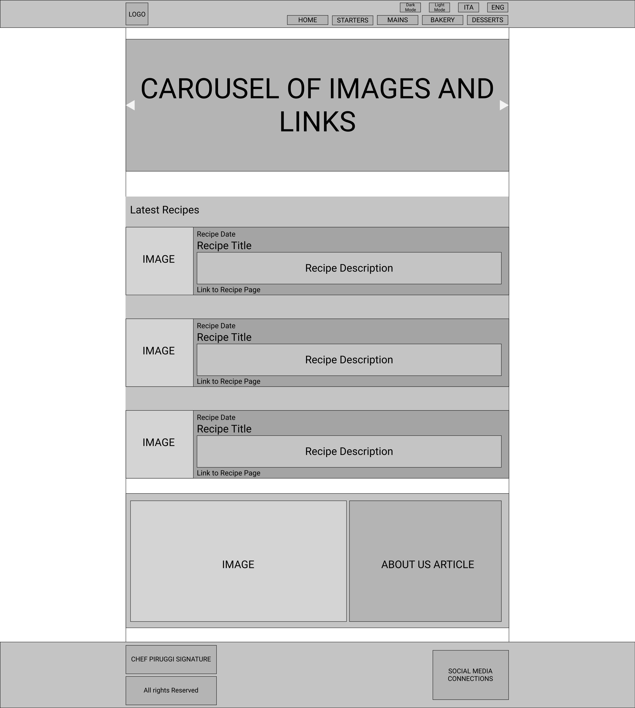starters.html (all recipe cards closed)
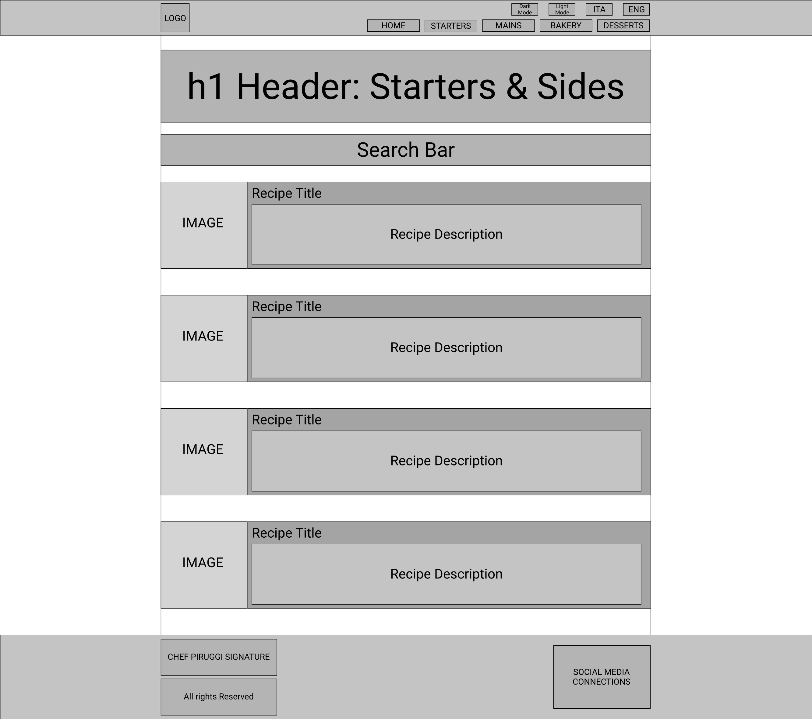starters.html (Recipe card Open)
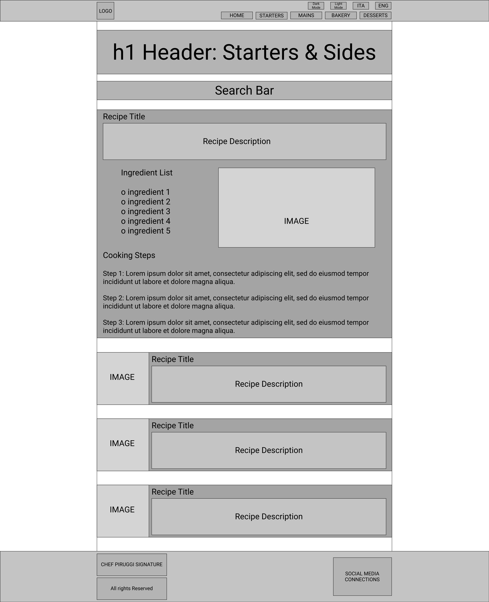maindishes.html (all recipe cards closed)
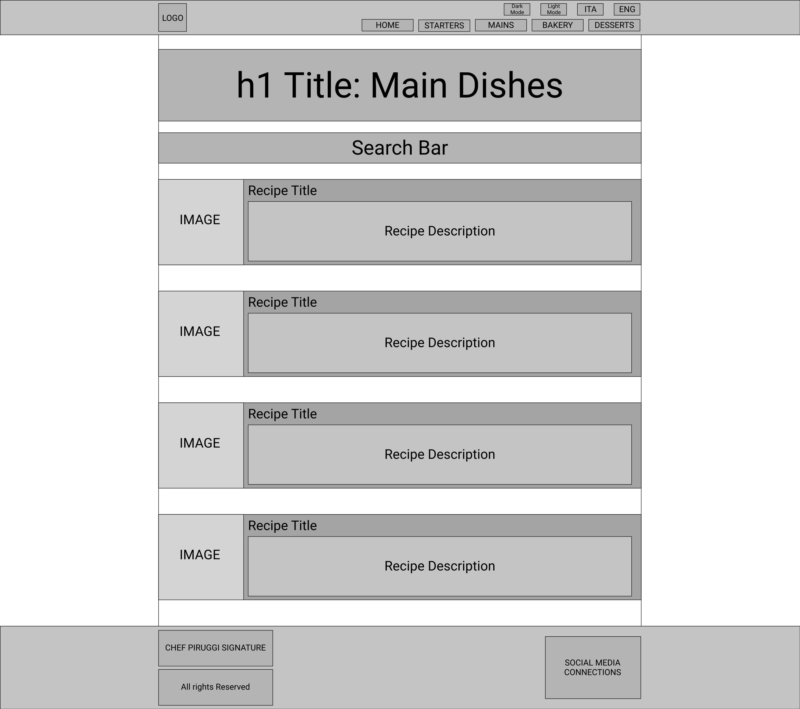maindishes.html (recipe card open)
bakery.html (all recipe cards closed)
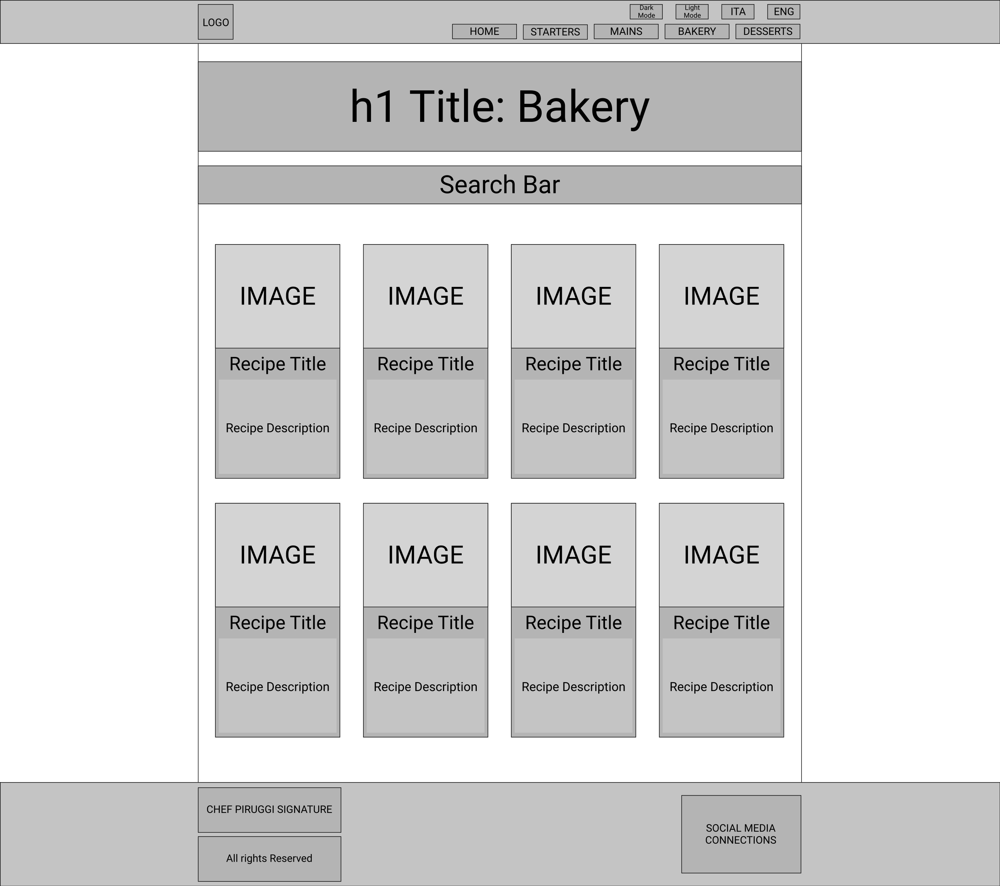bakery.html (recipe card open)
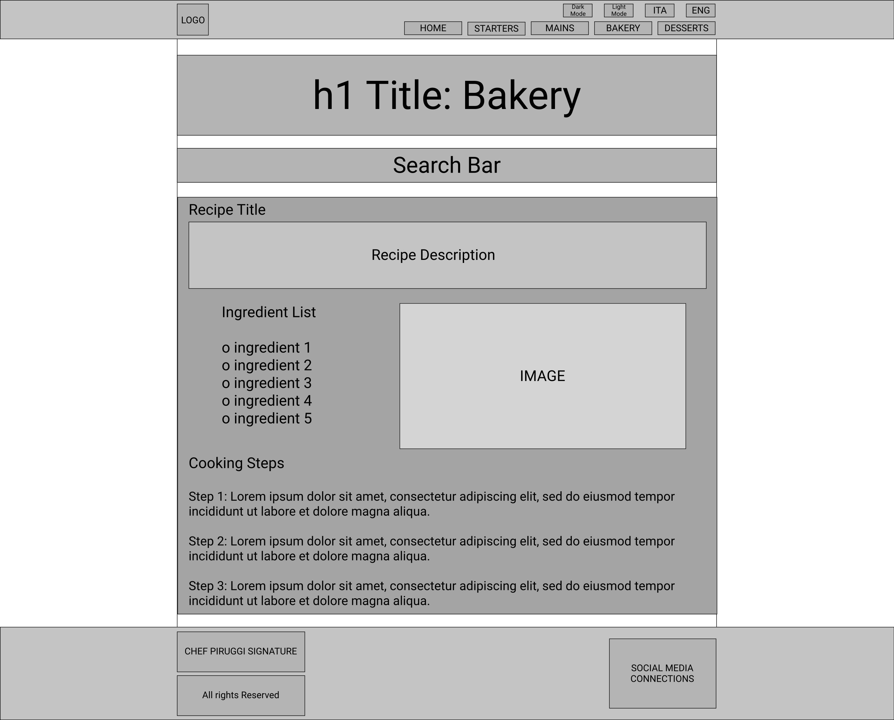desserts.html (all recipe cards closed)
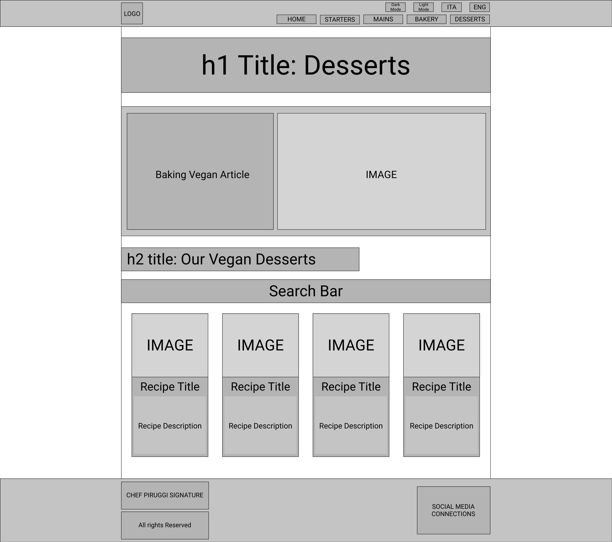desserts.html (recipe card open)
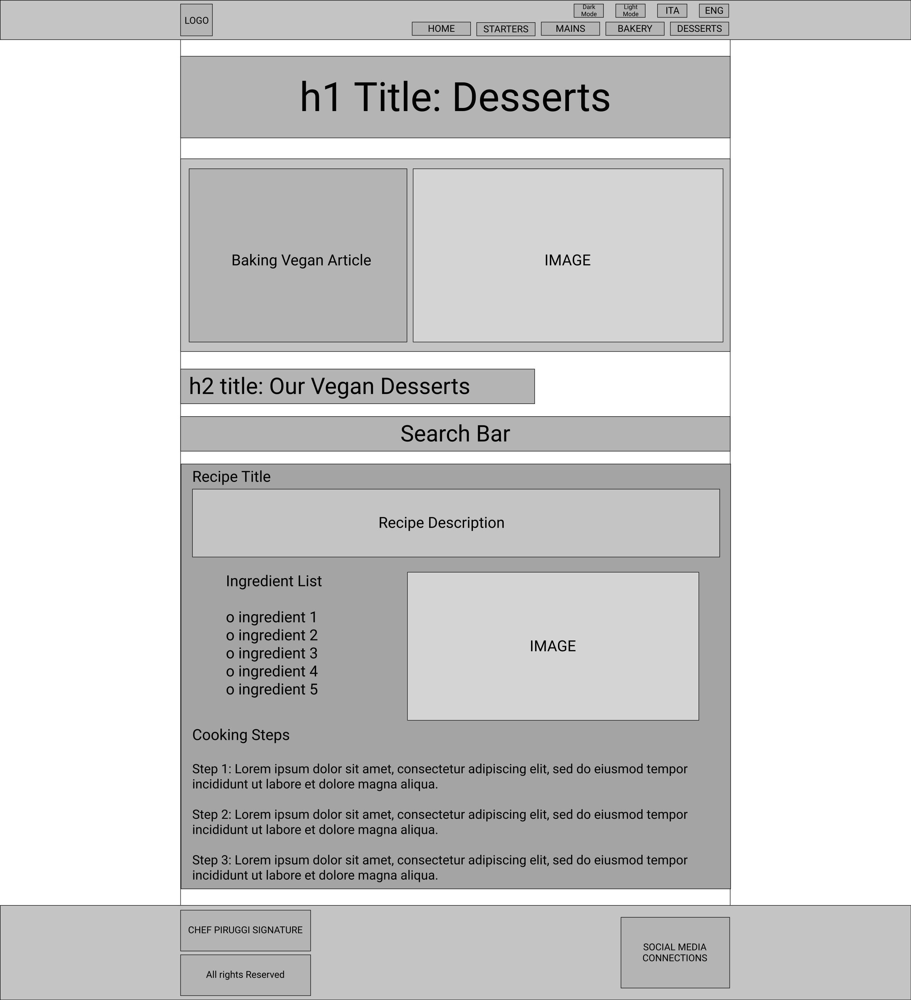Wireframes for Mobile Version
index.html mobile
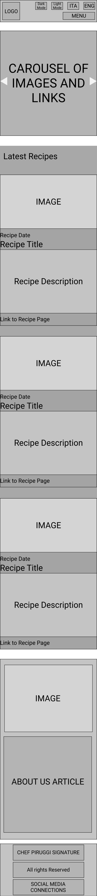starters.html mobile
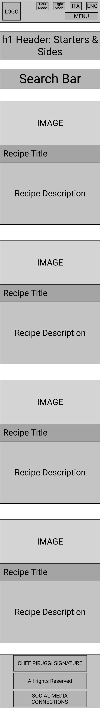maindishes.html mobile
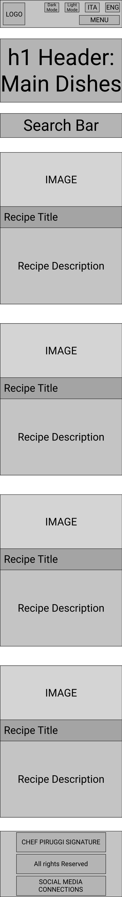bakery.html mobile